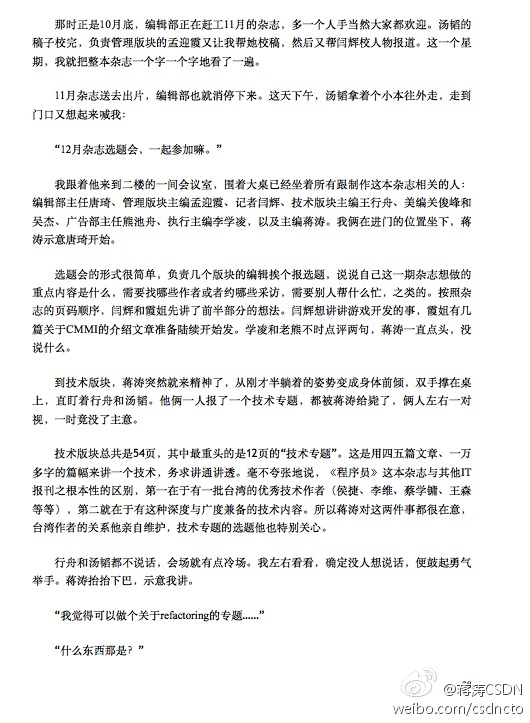

两个笑话唯一共同的就是中国人没看法： 联合国给几个世界各地的小朋友们出题，请谈谈对于世界上其他国家粮食短缺问题的自己的看法。非洲小朋友不知道什么是粮食，美国小朋友不知道什么是其他国家，欧洲小朋友不知道什么是短缺，拉美小朋友不知道什么是请，中国小朋友不知道什么是自己的看法。

Ada李力
2014-07-17

Ada李力
2014-07-17
信任危机//@王小沙大夫: 看病常识：广告越多的医院越不能去。广告可以是报纸，杂志，电台，电视台，一切公共场所如车厢，椅背，靠枕等的软硬广告。比较有蒙蔽意义的是各种搜索引擎，凡是度娘那里搜到的排在前面的，强调是属于武警或部队系统的，点开后有对话框的医院一定得提高警惕。
@俞敏洪:
云南新东方一名女员工，7月13日下午14时进入云南玛莉亚医院分娩，17时医生突然要求家属在空白病危通知书上签字。医生隐瞒产妇抢救情况，拼凑抢救设备，14日凌晨1:30产妇转至红会医院，凌晨2:20抢救无效，28岁离开人世。整个过程医院从预警，抢救，转院存在重大漏洞，敦请相关部门对该医院进行调查！


Ada李力
2014-07-17
“你明白我的意思吧？” 
@蒋涛CSDN:
收到老同事 @JeffXiong （网名：透明思考）的自传体图书，一名退学大学生从2000年到2013年的技术生涯成长经历，真实展现了程序员的工作和生活场景，同时也展现了这十几年软件技术的发展脉络。熊节在2001年就加入@程序员 杂志，分享书中关于早期程序员杂志和我的几个片段
- 